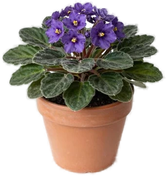

Фиалка (сенполия)
Характер
Компактная розетка 15–23 см с бархатными листьями, цветет почти круглый год. Прощает многое, но не холодную воду на листьях, перелив и нехватку света.
Свет
Яркий рассеянный свет без прямого солнца: восточное или северное окно, у южного и западного притеняй в полдень. Под лампами держи розетку в 15–30 см от источника и свети 12–16 часов в сутки (Clemson допускает до 18). Обязательно оставляй 8 часов темноты: без нее фиалка не закладывает бутоны. Тонкие темные листья на длинных черешках и отсутствие цветов — сигнал, что света мало.
Полив
Поливай, когда поверхность грунта подсохла на ощупь, зимой реже. Вода — комнатной температуры или чуть теплее: холодная оставляет на листьях желтые и белые кольца и пятна. Удобнее всего снизу: поставь горшок в поддон с водой на 20–30 минут, потом слей остаток. Несколько раз в год пролей грунт сверху, чтобы вымыть соли. Не лей в центр розетки и не поливай на ночь — так проще всего получить гниль.
Влажность
Любит влажный воздух, точных процентов источники не дают. Поставь горшок на поддон с мокрой галькой или включи увлажнитель. Листья не опрыскивай: RHS советует не мочить растение. Сухой воздух — одна из причин, почему фиалка не цветет.
Температура
Комфортно 16–27 °C: днем 21–24 °C, ночью 16–18 °C. Ночи ниже 16 °C тормозят рост. Держи подальше от холодного стекла и сквозняков, при холоде листья бледнеют и загибают края вверх.
Грунт и пересадка
Покупной грунт для фиалок или рыхлая смесь: например, 2–3 части торфа, 2 части вермикулита и 1 часть перлита (NC State). Фиалка лучше цветет в тесноте: горшок примерно в 2–3 раза уже розетки, обычно не больше 10 см в диаметре. Пересаживай раз в 2–3 года весной в горшок чуть больше кома. Не заглубляй — это путь к гнили.
Какой горшок нужен при пересадке →
Состав грунта: калькулятор смеси →
Размножение
Листом. Срежь крепкий здоровый лист, оставь черешок 2,5–4 см и воткни его под углом 45° в смесь вермикулита с песком 1:1. Полей, накрой прозрачным пакетом и поставь на яркий рассеянный свет при 18 °C. Корни появятся через 3–4 недели, новые листочки — через 6–8. У основания черешка обычно вырастает несколько деток: когда окрепнут, рассади их по одной.
Частые беды
- Желтые или белые кольца и пятна на листьях — холодная вода попала на листья — поливай теплой водой и снизу
- Не цветет — мало света или нет 8 часов темноты; реже — избыток азотной подкормки, большой горшок, сухой или холодный воздух
- Мягкая гниющая середина, никнут нижние листья — корневая и прикорневая гниль от перелива, плохого дренажа или глубокой посадки
- Сжатая скрученная середина, серые опушенные молодые листья — цикламеновый клещ — сразу изолируй растение; сильно пораженное Clemson советует выбросить
- Белые ватные комочки в пазухах — мучнистый червец
- Серый пушистый налет на цветах — серая гниль — убирай увядшие цветы, проветривай, не мочи растение
- Подгнивают черешки на краю горшка — соли от удобрений на крае — обмотай край фольгой, промой грунт
Подробные разборы:
Интересно
- Ботаники перенесли сенполию в род стрептокарпус: NC State пишет ее как Streptocarpus ionanthus, прежнее название — Saintpaulia ionantha. Родом из Танзании.
- По данным Clemson, одна кисть цветков в хороших условиях держится 3–6 недель.
- Penn State объясняет, зачем нужна темнота: на свету фиалка накапливает сигнал к цветению, но срабатывает он только ночью, поэтому лампы не должны гореть больше 16 часов.
Фиалка (сенполия) и кошки
Не ядовито
По базе ASPCA сенполия (Saintpaulia spp.) не ядовита для кошек и собак.
Источники
Факты взяты из справочников университетских служб, RHS и базы ASPCA. Где источники расходятся, мы так и пишем.